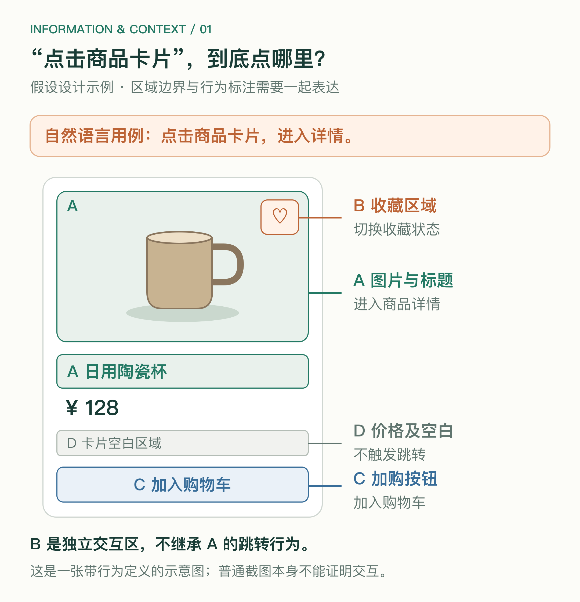
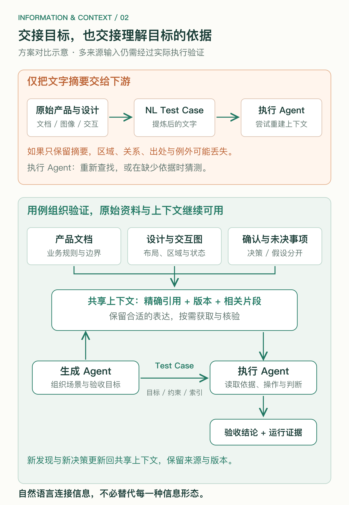

从 Agentic Coding 的测试执行，重新思考信息的表达与交接。
LLM 让自然语言成为了一个非常方便的工作接口。我们可以用文字提出需求、生成方案、安排任务，也可以让不同 Agent 通过文字交接工作。
这种便利容易让我们形成一个习惯：无论原始信息是什么，先让 AI 理解，再整理成自然语言，交给下一个 Agent。
但自然语言容易交流，并不意味着所有信息都适合被转写成自然语言。尤其当转写后的文字成为下游唯一的输入时，原来保留在图像、结构和上下文中的信息，可能已经在交接前丢失。
我们最近在 Agentic Coding 中遇到的测试执行问题，让我开始重新审视这件事。
我们的 Agentic Coding Flow 已经用于实际交付。最近做了一段时间的 test case generation audit 后，也开始把审核后认为“人能读懂”的自然语言测试用例交给 test execution。
但到了执行环节，仍然会出现无法理解、无法消费的情况。
一个自然的反应是，上游还不够扎实。那就继续补充规则、增加 audit，让用例更完整、更精确。
这些工作可以解决一部分问题。但另一种可能是，我们给自然语言用例安排了一个过重的职责：要求它独自承载测试执行需要的全部信息。
生成 Agent 原本看过 one-pager、产品文档、Figma 设计稿和交互说明。执行 Agent 却可能只拿到几条经过整理的文字。
如果两者面对的上下文不同，“上游已经理解”就不等于“下游已经获得”。
用一个假设的商品卡片说明。
卡片上有商品图片、标题、价格、收藏图标和“加入购物车”按钮。产品约定：图片和标题进入详情，收藏图标切换状态，加购按钮加入购物车，剩余空白区域不触发跳转。
用例可以写成：“点击商品卡片，进入详情。”
这句话很好懂，但执行时点哪里？图片、标题、价格，还是卡片空白处？
为了精确，我们继续补文字：哪些区域响应跳转，哪些区域独立处理点击，哪些区域不响应。再遇到多行标题、不同屏幕尺寸或卡片状态，描述还要继续展开。
而在设计图上标出交互区域，再用简短文字说明各区域的行为，空间边界往往能更直接地被理解。

图 1｜假设的商品卡片：标注区域边界与行为，避免“点击卡片”的歧义。
这里当然需要行为定义。一张普通截图，本身不能证明哪里可以点击。但布局、区域边界与行为标注可以共同表达这件事，没有必要把它们全部改写成一段脱离图像的文字。
文字在理论上可以描述得足够详细，甚至可以把坐标、层级和状态全部列出来。问题是，转写、理解、核对和维护这些文字，需要多少成本？有没有一种表达，能更直接地保留原来的关系？
自然语言能够描述某种信息，与它是这种信息最合适的载体，是两回事。
设计稿中的空间关系，流程图中的分支，表格中的对应关系，状态图中的转换条件，都有各自的组织方式。
把它们整理成顺序展开的自然语言时，我们需要选择描述顺序，补充指代，再让读者重建这些关系。
并不是所有转写都会失败。清晰的文字也可以保留结构。但在有限篇幅和实际生成过程中，摘要往往只留下主要场景，省略边界、例外、出处，以及不同状态之间的关联。
于是，一句“点击卡片”替代了一组有边界的交互区域；一句“状态正确”替代了几个明确的检查条件；一条孤立用例，也可能失去了它与产品目标和设计决策的联系。
更长的描述有时能补回来，有时却只是增加另一份需要与原始资料同步维护的副本。
因此，需要审视的不只是文字写得好不好，还包括：我们为什么要转写，以及转写之后，原始信息是否仍然可用。
这条链路可以概括为：产品与设计资料 → 生成 Agent 理解 → 自然语言用例 → 执行 Agent 再理解 → 操作与验收。
上游花费 effort，从丰富资料中提炼用例；下游再花费 effort，从用例里重建执行所需的上下文。重建失败之后，我们又增加 audit，试图让文字承担更多信息。
这不意味着生成用例没有价值。提炼验证场景、明确验收目标，本来就是必要工作。
值得质疑的是：为什么提炼完成后，执行器就要失去访问相关原始信息的通道？
尤其审核者可能看过原始资料、熟悉产品。“人能读懂”有时意味着这个人能用已有知识补全省略，而不是用例本身已经包含一切。
如果执行 Agent 没有这些背景，就不能指望它通过再理解几次，恢复已经被省略的信息。它需要回查，或者开始猜测。
沿着这个思路，test case 更适合作为连接原始产品需求与验收目标的索引。
它要明确本次验证的场景、前置条件、关键约束和通过标准，同时指向相关的产品规则、设计节点与交互标注。
例如，“点击商品图片进入对应详情”这条用例，应给出目标商品的前置状态、跳转后的验收条件，并关联对应版本的卡片设计及点击区域说明。
空间关系留在设计资料中，业务规则保留在产品约定中，用例负责组织这次验证。执行器再依据这些信息操作真实系统、收集结果。
索引也不能退化成一个链接列表。它仍然要说明验证什么、为什么查这些资料、哪些结果算通过。明确的验收约束，不能全部留给执行器临场推测。
这样，自然语言可以承担组织和连接信息的工作，而不必被迫替代每一种原始表达。
原始资料可访问之外，生成 Agent 已经获得的相关上下文，也需要能够交接给执行 Agent。
它可能读过特定版本的文档、查看过某个 Figma 节点，还获得了产品对歧义的确认。如果最终只传递几条自然语言用例，这些已经完成的工作就被截断了。
执行 Agent 即使拿到链接，仍可能需要重新寻找片段、确认版本、理解例外，并形成另一种解释。
可以随用例共享相关资料的版本与定位、实际使用的标注图、已确认的决策，以及尚未验证的假设和待决事项。它们可以保留在共享资料集合或上下文包里，不必全部塞进 case 正文。
共享的内容应可检查、可追溯，也不需要复制整个聊天记录或模型内部推理。特别要区分原始事实、已确认决策与 Agent 推测，不能让一个猜测因为被传给下游，就自动成为验收标准。
执行中新获得的事实和确认，也应更新回来。上下文需要延续，而不是每换一个 Agent，就从一份摘要重新开始。

图 2｜交接方式对比：用例连接验证目标，原始资料与共享上下文继续支持执行。
信息保留在原处，并不会自动解决执行问题。下游必须真正具备访问和使用它的能力。
Test execution engine 需要在用例指导下，按需查阅产品规则、设计节点和交互标注，再结合运行界面与系统状态，完成定位、操作和结果检查。
给一个无法读取 Figma 的执行器增加 Figma 链接，并没有接通上下文。把整份资料全部灌进模型，也不意味着它一定会正确使用。
资料需要有明确版本和精确定位。设计描述的是预期，实际页面可能因尺寸、数据和实现而不同，执行器还需要建立对应关系，不能只机械复用设计坐标。
如果产品规则与设计稿冲突，或关键行为尚未决定，就应该提出问题并完成对齐。当前实现不能反过来成为证明自己正确的标准。
最终，每个通过结论都应能连接到相应的验收依据与运行证据。多来源上下文提供的是更充分的输入，正确执行与判断仍然需要验证。
因此，audit 不仅要看用例文字是否清楚，还需要检查：验收目标有没有偏离需求，引用是否正确且可访问，生成时依赖的关键上下文能否交接，未决问题有没有被隐藏。
执行失败后，也需要区分原因。用例写错就修用例，原始资料未关联就补引用，读取不了就补获取能力，无法观察结果就补检查手段。不能把所有问题都变成“再多写一点”。
这套方式是否更有效，可以通过实际任务比较：只提供自然语言用例、增加精确引用、进一步共享相关上下文，分别需要多少澄清、产生多少误判，以及总时间和成本如何变化。
回查资料和维护引用同样有成本。需要优化的是达到同一验收质量的总成本，而不是单纯让用例更短，或者让上下文更多。
在 LLM 参与的软件研发里，自然语言是很有价值的接口。但“接口统一”不必意味着“信息形态统一”。
我们可以用文字说明目标、连接资料和组织行动，同时让布局留在设计图里，让分支留在流程图里，让精确约束保留结构，让实际结果保留证据。
让信息保留在合适的表达里，再让 Agent 能够找到、理解并连接这些表达。这是我希望这条 flow 继续改进的方向。